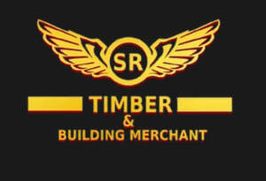

Trade Mark Journal No.2025/033 15 August 2025
UK00004207860 22 May 2025 (6,17,19,37)

- Class 6
- Metal materials for construction; Metal materials for building and construction; Building and construction materials and elements of metal; Construction materials of metal with soundproofing qualities; Steel building materials; Metal building materials; Building materials of metal; Metal materials for building; Metallic building materials; Building materials of metal with soundproofing qualities; Metal goods for use in construction.
- Class 17
- Insulating materials for building; Soundproofing materials; Insulation materials of plastics.
- Class 19
- Wood; Wood and artificial wood; Wood flooring; Flooring made of wood; Artificial wood flooring; Sawn wood; Veneer wood; Wood veneer; Wood siding; Parquet flooring made of wood; Wood paving; Building and construction materials and elements made of wood and artificial wood ; Wood trim; Wood sheeting; Wood veneer parquet flooring; Parquet wood flooring; Parquet flooring of wood; Wood for building; Wood for use in building; Wood fibreboard; Wood core plywood; Wood tar; Building materials of wood; Preserved wood [anti-decay wood]; Floor coverings of wood; Wood paneling; Wood tile flooring; Wood shingles; Stave wood; Glue-laminated wood; Shuttering made of wood; Boards of wood fibre; Wood fibre boards; Wood moldings; Wood laminates; Hobby wood; Artificial wood; Wood veneers; Building components of imitation wood; Roofing boards [of wood]; Moulded wood; Wood chipboard; Planks [wood for building]; Planks of wood for building; Balsa wood; Scaffolding of wood; Wood panelling; Cask wood; Wood blocks; Mantels of wood for fireplaces; Wood sports floors; Building materials of plastics material; Facade construction components of non-metallic materials; Construction materials, not of metal; Materials, not of metal, for construction; Building and construction materials and elements, not of metal; Concrete building materials; Building materials (non-metallic); Non-metallic building materials; Construction materials with soundproofing qualities, not of metal; Fiber reinforced plastic construction materials; Fiberboard [building materials]; Roofing materials; Strawboard [building materials]; Laminates of non-metallic materials for use in building; Wood for construction purposes; Bridge bearings [construction materials] not of metal; Intumescent building materials; Construction elements of timber; Non-metallic building materials for screeding; Building construction materials in the nature of aromatic cedar planking; Construction timber; Building boards of plastics materials; Building materials, not of metal.
- Class 37
- Construction; Construction of buildings; Buildings (Construction of -); Building construction.
SR TIMBER & BUILDING MERCHANT LTD